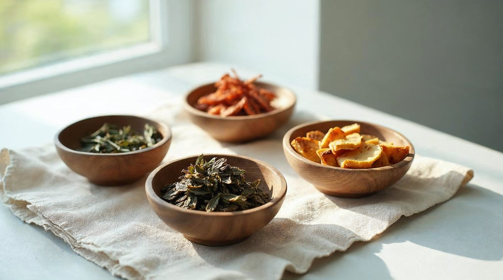
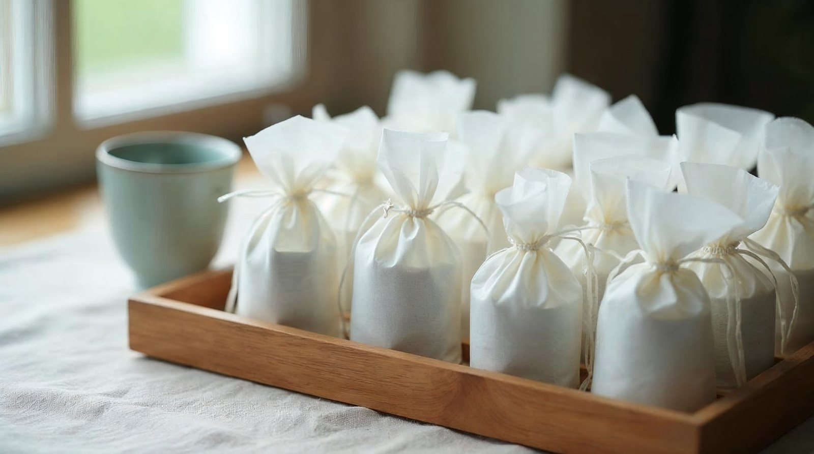
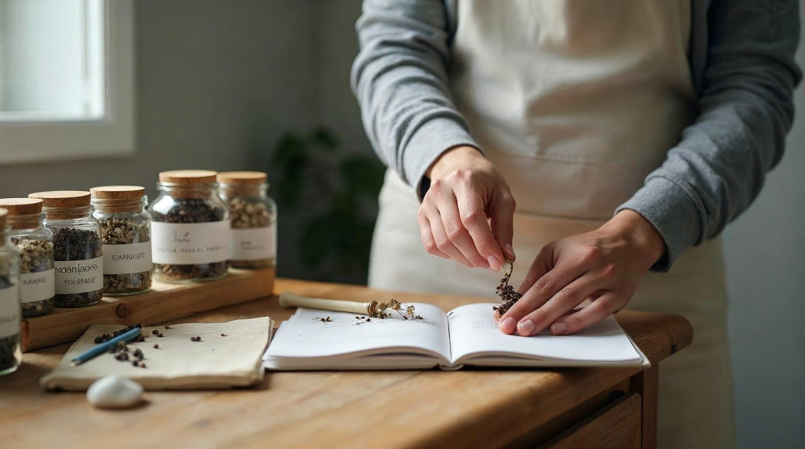
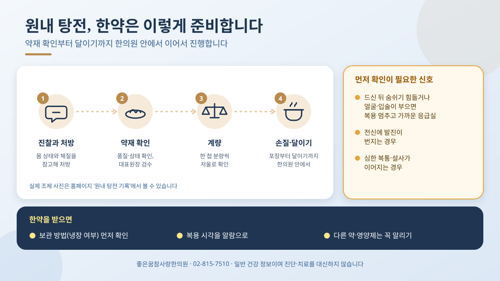

이종호 한의사 감수좋은꿈참사랑한의원 대표원장 (한의사 면허번호 19769)발행 2026-11-23 · 수정 2026-11-26
이 글의 차례
- 이런 과정을 거칩니다
- 왜 한약이 맞지 않게 느껴질 때가 있을까요
- 먼저 이렇게 여쭙니다
- 상황별 예시
- 스스로 점검해 보세요
- 일상에서 먼저 해 볼 수 있는 것
- 얼마나 지켜보고 언제 상담할까요
- 왜 한 번에 많이 짓지 않고 나눠서 지을까요
- 받은 날 집까지 가져가실 때
- 첫 봉을 드실 때 살펴보실 것
- 원내 탕전이라서 여쭤보기 쉬운 것들
- 냉장고에서 꺼내 드실 때
- 여행이나 출장이 잡혔을 때
- 면포에 담아 달이는 까닭
- 처방이 바뀌면 받는 날도 함께 정합니다
- 탕전 과정에서 드시는 분이 도와주실 일
- 처음 한약을 받는 분께 드리는 말씀
- 한의원에서 함께 살필 수 있는 경우
- 이렇게 기록해 오시면 상담이 쉬워집니다
- 이런 증상은 먼저 확인이 필요합니다
- 함께 읽으면 좋은 글
원내 탕전은 한약을 한의원 안에서 달인다는 뜻입니다. 좋은꿈참사랑한의원은 진찰로 처방이 정해지면 약재를 한 첩 분량씩 저울에 달아 확인하고, 대표원장이 검수한 뒤 한의원 안에서 달여 파우치에 담습니다.
처방한 한의사와 약을 준비하는 곳이 한 공간에 있어, 드시는 동안 궁금한 점이나 불편을 바로 여쭤보고 다음 처방에 이어서 반영하기 쉽다는 점이 원내 탕전의 의미입니다. 실제 조제 과정은 원내 탕전 기록에서 사진으로 보실 수 있습니다.

이런 과정을 거칩니다
- 진찰과 처방: 이야기를 듣고 맥과 혀, 배를 살핀 뒤 지금 몸 상태와 체질적 경향을 참고해 한약이 필요한지, 어떤 처방이 맞는지 정합니다.
- 약재 확인: 약재가 새로 들어오면 상태를 확인하고, 대표원장이 검수합니다. 약재 검수는 일반적으로 겉모양과 색, 냄새, 습기, 이물질이 섞이지 않았는지처럼 눈과 손으로 확인할 수 있는 상태를 살피는 일을 말합니다.
- 계량: 처방에 맞춰 약재를 한 첩 분량씩 저울에 달아 확인합니다.
- 녹용 확인: 녹용이 들어가는 처방이라면 녹용 절편도 조제 전에 따로 확인합니다.
- 손질과 달이기, 포장: 약재를 손질해 면포에 담아 달이고, 달인 뒤에는 파우치에 담아 포장합니다. 달이는 시간과 방법은 처방에 따라 달라 받으실 날짜와 함께 진료 때 안내해 드립니다.
- 받는 날 안내: 한약을 드리는 날 보관법과 복용 시각, 지켜볼 점, 다음 진료 시기를 함께 알려 드립니다.
왜 한약이 맞지 않게 느껴질 때가 있을까요
한약을 드시다 보면 "나한테 맞는 걸까" 하는 불편이 생길 때가 있습니다.
- 처방을 받은 뒤 감기나 소화 불편처럼 몸 상태가 달라진 경우
- 식사와 너무 가깝게 드시거나 시간이 들쭉날쭉한 경우
- 탕약을 냉장 보관하지 않거나 오래 두고 드신 경우
- 새로 시작한 양약이나 영양제가 있는 경우
- 같은 처방을 다시 지었는데 색이나 향이 조금 다르게 느껴지는 경우
이럴 때는 혼자 판단하지 말고 처방받은 곳에 먼저 여쭤 주세요. 원내에서 달인 한약은 처방한 한의사에게 약재와 달인 과정을 바로 여쭤볼 수 있어, 원인이 몸 상태의 변화인지 보관이나 복용 방법인지 함께 가려 보기 쉽습니다.
먼저 이렇게 여쭙니다
- 지금 드시는 약과 영양제가 있나요?
- 간 질환이 있거나, 임신 중이거나 임신 가능성이 있나요?
- 하루 중 약을 챙겨 드시기 편한 시간은 언제인가요?
- 예전에 한약을 드시고 불편했던 적이 있나요?
- 맛이나 향에 예민한 편인가요?
- 한약을 받으러 오시기 편한 날과 냉장 보관할 곳이 있나요?
- 가까운 시일 안에 수술, 내시경, 치과 치료나 긴 출장·여행 일정이 있나요?

상황별 예시
- 예를 들어 한약을 처음 드셔 보는 직장인이라면, 받은 한약을 회사 냉장고에 둘지 집에 둘지, 점심 무렵 한 번은 어떻게 챙길지를 함께 정합니다. 출근 시간과 식사 시간을 알려 주시면 복용 시각을 생활에 맞춰 안내해 드릴 수 있습니다.
- 예를 들어 연로하신 부모님의 한약을 자녀가 대신 받아 가는 경우라면, 보관 칸과 하루 복용 횟수를 메모로 적어 드리고 드신 날을 달력에 표시해 두시도록 권합니다. 부모님이 드시는 다른 약 목록도 함께 알려 주세요.
- 예를 들어 같은 처방을 다시 지어 받았는데 지난번과 색이나 향이 조금 다르게 느껴지는 경우라면, 드시기 전에 사진을 찍어 한의원에 여쭤 주세요. 약재가 들어온 시기에 따라 조금씩 다를 수 있지만, 확인이 먼저입니다.
스스로 점검해 보세요
- 받은 한약의 보관 방법(냉장 여부)을 알고 있다
- 하루 복용 시각을 생활 시간표에 맞춰 정해 두었다
- 빠뜨린 날의 약을 몰아서 드신 적이 있다
- 드시는 동안 새로 시작한 양약이나 영양제가 있다
- 파우치가 부풀었거나 냄새·색이 평소와 다르다고 느낀 적이 있다
- 속 불편이나 가려움 같은 작은 불편이 사흘 넘게 이어진다
- 남은 약이 닷새쯤일 때 다음 진료 날짜를 정해 두지 않았다
해당하는 항목이 있으면 진료 때 말씀해 주세요. 복용 방법과 다음 처방을 정하는 데 참고합니다.
일상에서 먼저 해 볼 수 있는 것
- 한약을 받으면 보관 방법(냉장 여부)과 복용 시각을 먼저 확인하기
- 하루 복용 시각을 알람으로 정해 두기
- 드시는 동안 잠, 소화, 대변의 변화를 짧게 메모하기
- 궁금한 약재 이름과 복용법은 처방한 한의사에게 편하게 묻기
- 냉장고에 한약을 두는 칸을 정해 다른 음료와 섞이지 않게 하기
- 빠뜨린 한 번은 몰아서 드시지 말고 다음 시각부터 이어 드시기
얼마나 지켜보고 언제 상담할까요
한약을 받은 첫 사나흘은 속이 편한지, 대변과 잠이 어떤지 한 줄씩 적어 두세요. 속이 조금 더부룩하거나 대변이 약간 묽어지는 정도라면 이삼일 지켜보며 기록하되, 사흘 넘게 이어지거나 점점 심해지면 다음 진료를 기다리지 말고 전화로 알려 주세요.
대개 보름 정도 드신 뒤 몸의 반응을 다시 확인하므로, 남은 약이 닷새쯤일 때 진료 일정을 잡아 두시면 처방을 이어 갈지 정하기 쉽습니다. 파우치가 부풀었거나 냄새가 이상하면 그 파우치는 드시지 말고 바로 연락해 주세요.
왜 한 번에 많이 짓지 않고 나눠서 지을까요
처음 오신 분께서 "한 번에 두세 달 치를 지어 주시면 편하지 않을까요" 하고 물으시는 경우가 있습니다. 저는 대개 보름 정도 드실 양으로 시작하자고 말씀드립니다.
- 처음 드시는 처방은 몸이 어떻게 받아들이는지 확인할 시간이 필요합니다.
- 드시는 사이 잠과 소화, 대변이 달라지면 다음 처방에서 약재 구성이나 양을 바꿀 수 있습니다.
- 탕약은 대개 냉장 보관하며 정해진 기간 안에 드셔야 해서, 너무 많이 받으면 보관이 부담이 됩니다.
- 계절이나 일정이 바뀌면 몸 상태도 달라져, 같은 처방을 길게 이어 가는 것이 맞지 않을 수 있습니다.
원내에서 달이면 다음 처방을 정한 뒤 다시 달여 드리는 흐름이 한 공간 안에서 이어집니다. 그래서 나눠 짓는 일이 번거로움이 아니라 몸에 맞춰 가는 과정이 됩니다.
받은 날 집까지 가져가실 때
한약을 받는 날의 동선도 의외로 중요합니다. 탕약은 대개 냉장 보관을 권하는데, 받은 뒤 장을 보거나 다른 볼일을 오래 보시면 그만큼 상온에 머무는 시간이 길어집니다.
- 받는 날은 되도록 곧장 집이나 회사로 가실 수 있는 시간으로 정해 주세요.
- 여름철에는 차 안이나 트렁크에 오래 두지 않도록 해 주세요.
- 집에 도착하면 파우치 개수를 한 번 세고, 냉장고의 정해 둔 칸에 바로 넣어 주세요.
- 한꺼번에 들고 가시기 어렵다면 받으러 오는 날을 미리 상의해 주세요.
첫 봉을 드실 때 살펴보실 것
처음 한 봉은 맛과 향, 양을 처음 만나는 순간이라 조금 낯설 수 있습니다. 데우실 때는 받는 날 안내받은 방법을 따르고, 드신 뒤 한두 시간 동안 속이 어떤지 가볍게 느껴 보세요.
그날 저녁 메모에 한 줄 남겨 두시면 다음 진료 때 처음 반응을 떠올리기 쉽습니다. 맛이 너무 써서 넘기기 힘들다면 참고 드시기보다 다음 진료 전에라도 말씀해 주세요. 복용 방법을 함께 찾아봅니다.
원내 탕전이라서 여쭤보기 쉬운 것들
처방한 사람과 달이는 곳이 같은 공간에 있으면 궁금한 것을 한자리에서 물어보실 수 있습니다. 진료실에서 자주 받는 질문은 이런 것들입니다.
- 이번 처방에 들어간 약재 가운데 이름이 궁금한 것
- 달인 날짜와 언제까지 드시면 되는지
- 여행이나 출장 일정이 생겼을 때 남은 약을 어떻게 할지
- 다른 가족이 같은 증상일 때 나눠 드셔도 되는지
마지막 질문에는 늘 같은 답을 드립니다. 한약은 드실 분을 진찰해 정한 처방이라, 가족이라도 따로 진찰받으신 뒤 정하시길 권합니다. 이런 질문은 사소하지 않으니 편하게 물어 주세요.
냉장고에서 꺼내 드실 때
탕약은 냉장고에서 꺼내 바로 드셔도 되는지, 데워 드셔야 하는지가 처방에 따라 다릅니다. 받으실 때 안내받은 방법을 따르시고, 기억이 나지 않으면 전화로 여쭤 주세요.
데워 드시라고 안내받았다면 파우치째 따뜻한 물에 잠시 담가 두는 방법을 권하는 경우가 많습니다. 파우치를 뜯은 뒤에는 그 자리에서 다 드시고, 반쯤 남겨 다시 냉장고에 넣어 두지 않도록 해 주세요.
여행이나 출장이 잡혔을 때
드시는 도중에 며칠 집을 비우게 되는 일이 생깁니다. 이럴 때는 남은 약을 어떻게 할지 혼자 정하기보다 일정이 잡히는 대로 미리 알려 주세요.
- 하루 이틀이라면 숙소에 냉장고가 있는지 먼저 확인해 보세요.
- 이동 시간이 길다면 보냉 가방과 얼음팩을 준비하는 방법이 있습니다.
- 일정이 길다면 그 기간은 쉬고 돌아와 이어 드실지 함께 정합니다.
- 다음 처방을 받을 날짜도 여행 일정을 피해 미리 잡아 두세요.
면포에 담아 달이는 까닭
원내에서는 손질한 약재를 면포에 담아 달입니다. 약재를 그대로 물에 넣으면 잘게 부서진 조각이나 가루가 탕액에 섞이기 쉬워, 면포로 감싸 달인 뒤 걸러 내면 드시기에 한결 맑은 탕약이 됩니다.
이런 작은 과정도 드시는 분이 편하게 넘길 수 있도록 하려는 것입니다. 그래도 바닥에 약간의 앙금이 가라앉는 것은 흔한 일이니, 드시기 전에 파우치를 가볍게 흔들어 주시면 됩니다.
처방이 바뀌면 받는 날도 함께 정합니다
재진에서 처방을 조정하게 되면 약재를 다시 계량하고 달이는 과정이 새로 시작됩니다. 그래서 다음 처방을 받으실 날짜를 진료가 끝날 때 함께 정해 두면 약이 끊기는 날 없이 이어 드시기 쉽습니다.
탕전 과정에서 드시는 분이 도와주실 일
원내에서 달이는 과정은 한의원이 맡지만, 드시는 분이 함께해 주시면 좋은 일도 있습니다. 처방을 정하는 날 복용 중인 약과 일정을 빠짐없이 알려 주시는 것, 받는 날 안내받은 보관법을 그대로 지켜 주시는 것, 드시는 동안 달라진 점을 짧게 적어 두시는 것입니다.
이 세 가지가 있으면 다음 처방을 정할 때 약재와 양을 어떻게 손볼지 훨씬 분명해집니다. 원내 탕전은 이렇게 진료실과 탕전실, 드시는 분의 기록이 이어질 때 의미가 커진다고 생각합니다.
처음 한약을 받는 분께 드리는 말씀
처음 한약을 받으시면 파우치 개수와 보관, 복용 시각까지 챙길 것이 많아 낯설게 느껴지실 수 있습니다. 모든 것을 한 번에 외우실 필요는 없습니다. 받는 날 들은 내용을 휴대전화로 메모해 두시고, 헷갈리는 점은 드시기 전에 전화로 다시 물어 주세요.
같은 질문을 여러 번 하셔도 괜찮습니다. 드시는 분이 편하게 챙기실 수 있어야 정성껏 달인 한약도 제 몫을 한다고 생각합니다.
한의원에서 함께 살필 수 있는 경우
- 한약을 처음 드셔서 복용법이 걱정되는 경우
- 드시는 중에 속이 불편하거나 잠이 달라진 경우
- 다른 약과 함께 드셔도 되는지 확인하고 싶은 경우
- 약재나 달이는 과정이 궁금해 직접 여쭤보고 싶은 경우
좋은꿈참사랑한의원에서는 먼저 몸 상태와 생활을 충분히 듣고, 진맥·설진·복진으로 살핀 뒤 한약이 필요한지와 처방을 정합니다. 한약을 드리는 날에는 보관법과 복용법, 지켜볼 점을 함께 알려 드립니다.
첫 방문에는 데스크에서 기본 정보를 적은 뒤, 원장이 주된 불편이 언제부터 어떤 때 심해지는지와 잠·소화·체온·대소변, 복용 중인 약을 여쭙고 맥부터 짚어 봅니다. 필요하다고 판단될 때 혀와 배를 살피고, 이미 받은 검사 결과가 있으면 함께 봅니다.
한약이 필요하다고 판단되면 처방 방향과 받는 날짜, 복용 시각을 생활에 맞춰 정하고, 처방이 정해진 뒤 원내에서 약재를 계량·검수해 달입니다. 다시 오시면 지난번 이야기와 적어 오신 기록부터 이어서 여쭙습니다.

이렇게 기록해 오시면 상담이 쉬워집니다
- 한약을 드신 시각과 빠뜨린 날
- 드시는 동안의 잠, 소화, 대변 변화
- 새로 시작한 약이나 영양제
- 불편했던 점이 있었다면 날짜와 내용
- 남은 파우치 개수(일주일에 한 번 세어 두기)
이런 증상은 먼저 확인이 필요합니다
- 드신 뒤 숨쉬기 힘들거나 얼굴·입술이 붓는 경우(바로 복용을 멈추고 가까운 응급실)
- 전신에 발진이 번지는 경우
이런 신호가 있으면 한의원보다 가까운 병원이나 응급실을 먼저 찾으세요.
함께 읽으면 좋은 글
- 대표원장이 약재를 직접 검수한다는 건 무슨 뜻이고, 한약을 받기 전에는 무엇을 물어보면 되나요?
- 원내에서 달인 한약을 받는 날 어떻게 보관하면 좋을까요?
- 한약은 왜 15일 단위로 확인하고 다음을 정하나요?

여쭙는 것
- 지금 드시는 약과 영양제가 있나요?
- 간 질환이 있거나, 임신 중이거나 임신 가능성이 있나요?
- 하루 중 약을 챙겨 드시기 편한 시간은 언제인가요?
생활에서 해 볼 것
- 한약을 받으면 보관 방법(냉장 여부)과 복용 시각을 먼저 확인하기
- 하루 복용 시각을 알람으로 정해 두기
- 드시는 동안 잠, 소화, 대변의 변화를 짧게 메모하기
한의원에서 함께 살필 것
- 한약을 처음 드셔서 복용법이 걱정되는 경우
- 드시는 중에 속이 불편하거나 잠이 달라진 경우
- 다른 약과 함께 드셔도 되는지 확인하고 싶은 경우
먼저 확인이 필요한 신호
- 드신 뒤 숨쉬기 힘들거나 얼굴·입술이 붓는 경우(바로 복용을 멈추고 가까운 응급실)
- 전신에 발진이 번지는 경우
한눈에 보는 표
| 구분 | 핵심 |
|---|---|
| 여쭙는 것 | 지금 드시는 약과 영양제가 있나요? 간 질환이 있거나, 임신 중이거나 임신 가능성이 있나요? |
| 생활에서 해 볼 것 | 한약을 받으면 보관 방법(냉장 여부)과 복용 시각을 먼저 확인하기 하루 복용 시각을 알람으로 정해 두기 |
| 한의원에서 함께 살필 것 | 한약을 처음 드셔서 복용법이 걱정되는 경우 드시는 중에 속이 불편하거나 잠이 달라진 경우 |
| 먼저 확인이 필요한 신호 | 드신 뒤 숨쉬기 힘들거나 얼굴·입술이 붓는 경우(바로 복용을 멈추고 가까운 응급실) 전신에 발진이 번지는 경우 |
자주 묻는 질문
약재를 직접 볼 수 있나요?
약재 확인과 계량 과정은 원내 탕전 기록에서 사진으로 보실 수 있으며, 궁금한 점은 진료 중에 여쭤보시면 설명해 드립니다.
한약을 달이는 데 시간이 얼마나 걸리나요?
처방과 일정에 따라 달라서 진료 때 받으실 날짜와 함께 안내해 드립니다. 미리 알고 싶으시면 방문 전 전화로 확인해 주세요.
받은 한약은 어떻게 보관하나요?
처방에 따라 다르므로 받을 때 안내하는 보관법을 따라 주세요. 탕약은 대개 냉장 보관을 권합니다.
다시 지은 한약이 지난번과 색이나 향이 조금 달라요.
약재는 들어온 시기에 따라 조금씩 다를 수 있습니다. 그래도 눈에 띄게 다르거나 파우치가 부풀었다면 드시지 말고 사진을 찍어 연락해 주세요.
좋은꿈참사랑한의원은 재진 때 지난번 이야기부터 이어서 여쭙니다. 진료시간과 예약은 오시는 길에서 확인하세요.
어디서 상담받을 수 있나요?
좋은꿈참사랑한의원은 서울 동작구 만양로2길 2 신성빌딩 3층·5층(서울 동작구 상도동, 7호선 상도역 3번 출구 근처)에 있습니다. 한의사 3명(이종호 대표원장, 조영기 수석진료원장, 정원영 진료원장)이 진료합니다. 진료시간은 평일 09:30~20:00(점심 13:00~14:00), 토·일·공휴일 09:30~15:00이며, 방문 전 전화로 확인을 권합니다. 예약은 네이버 예약, 카카오톡 상담, 전화 02-815-7510로 받습니다.
이 글은 일반적인 건강 정보이며 개인의 진단이나 치료를 대신하지 않습니다. 증상이 있거나 복용 중인 약이 있다면 진료를 통해 확인하세요. 치료 효과는 개인마다 다를 수 있습니다.
작성 기준: 일반적으로 알려져 있는 건강 정보를 참고해 정리했습니다(대표원장 감수). 증상 기록은 1~2주 동안 하루 1회, 비슷한 시간에 적어 오시면 지난 상태와 비교하기 쉽습니다.